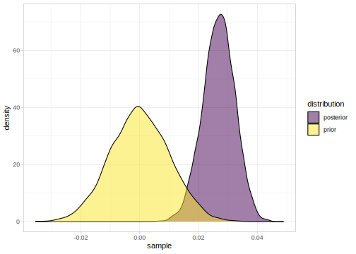
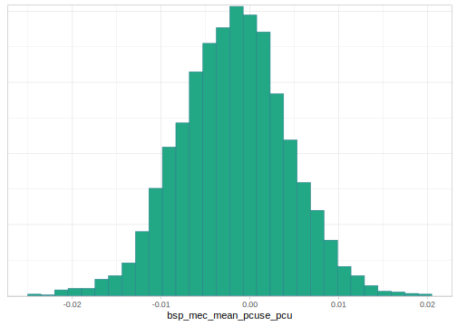

7.3 Measurement-error models
As a motivating example, consider the following data. We have mean voice onset time (VOT) data from male and female native speakers of Mandarin, along with the standard errors of the mean VOT. In addition, for each subject, their average vowel duration is calculated from a separate set of data; the standard error of the average vowel duration is also available.
Voice onset time is the amount of time that elapses after a stop consonant is released until the vocal cords start vibrating. Of interest here is the question whether the average time taken to produce a vowel affects VOT. See Vasishth et al. (2018) for more details; the data used here are from that paper.
## subject meanVOT seVOT meanvdur sdvdur sevdur
## 1 F01 106 3.8 160 37 12
## 2 F02 87 4.2 177 43 14
## 3 F03 98 4.6 166 47 15
## 4 F04 85 4.7 192 42 13
## 5 F05 85 4.5 164 41 13
## 6 F06 99 4.1 210 44 14
## c_meanvdur cmeanvdur sestdvdur
## 1 -5.31 -0.294 0.32
## 2 11.54 0.638 0.32
## 3 0.88 0.049 0.32
## 4 26.19 1.449 0.32
## 5 -1.11 -0.061 0.32
## 6 44.11 2.440 0.32## subject meanVOT seVOT
## Length:20 Min. : 62 Min. :2.1
## Class :character 1st Qu.: 79 1st Qu.:3.8
## Mode :character Median : 84 Median :4.3
## Mean : 86 Mean :4.6
## 3rd Qu.: 92 3rd Qu.:4.8
## Max. :108 Max. :8.3
## meanvdur sevdur
## Min. :137 Min. : 9.3
## 1st Qu.:154 1st Qu.:12.7
## Median :165 Median :13.5
## Mean :166 Mean :13.7
## 3rd Qu.:178 3rd Qu.:14.8
## Max. :210 Max. :18.0Begin by centering the predictor:
At first glance, the relationship between mean vowel duration and mean VOT looks quite tantalizing:

A simple linear model seems to be consistent with the claim that there is an association between mean VOT and mean vowel duration:
priors <- c(set_prior("normal(0, 200)", class = "Intercept"),
set_prior("cauchy(0,5)", class = "b"),
set_prior("normal(0, 20)", class = "sigma") )
m1<-brm(meanVOT~1+meanvdur,
data = mandarin,
family = gaussian(),
prior = priors,
iter = 2000, chains = 4,
control = list(adapt_delta = 0.999,
max_treedepth=15))## Compiling the C++ model## Start sampling## `stat_bin()` using `bins = 30`. Pick better value
## with `binwidth`.
In many practical research problems, researchers will often take average measurements like these and examine the correlation between them. However, each of those data points is being measured with some error (uncertainty), and that uncertainty is not being taken into account in the model. Ignoring this uncertainty leads to over-enthusiastic inferences. A measurement-error model takes this uncertainty into account. We will fit the model using brms.
7.3.1 Using brms
Notice that a Cauchy prior is used for the parameter of interest; a normal(0,10) or a more vague prior would probably also have been fine (based on expert opinion from a phonology researcher). A Cauchy prior was used just to demonstrate the point that in situations where not much is known about a research question; one could use such a vague prior.
priors_cauchy <- c(set_prior("normal(0, 200)", class = "Intercept"),
set_prior("cauchy(0,5)", class = "b",
coef = "memeanvdursevdur"),
set_prior("normal(0, 20)", class = "sdme")
)The parameter with class sdme refers to the unknown standard deviation (\(\approx\) standard error) of the latent unknown means that generate the underlying vowel duration means. I.e., we assume that each of the observed vowel durations has some true underlying mean with some variability around some single true mean. This is very similar to the meta-analysis situation we saw earlier: \(\theta_i \sim Normal(\theta,\tau)\), where \(\theta_i\) was the true latent mean of each study, and \(\theta\) was the (unknown) true value of the parameter, and \(\tau\) was the between-study variability.
m2M_me <- brm(formula = meanVOT | se(seVOT,sigma=TRUE) ~ 1 + me(meanvdur, sevdur),
data = mandarin,
family = gaussian(),
prior = priors_cauchy,
iter = 2000, chains = 4,
control = list(adapt_delta = 0.999,
max_treedepth=15))In the code above, sigma=TRUE ensures that a residual error term is present in the model.
## Family: gaussian
## Links: mu = identity; sigma = identity
## Formula: meanVOT | se(seVOT, sigma = TRUE) ~ 1 + me(meanvdur, sevdur)
## Data: mandarin (Number of observations: 20)
## Samples: 4 chains, each with iter = 2000; warmup = 1000; thin = 1;
## total post-warmup samples = 4000
##
## Population-Level Effects:
## Estimate Est.Error l-95% CI u-95% CI
## Intercept 85.38 4.87 76.32 93.78
## memeanvdursevdur 0.50 1.25 -2.56 2.37
## Rhat Bulk_ESS Tail_ESS
## Intercept 1.02 214 71
## memeanvdursevdur 1.05 62 23
##
## Family Specific Parameters:
## Estimate Est.Error l-95% CI u-95% CI Rhat
## sigma 8.26 3.15 1.37 14.06 1.01
## Bulk_ESS Tail_ESS
## sigma 474 388
##
## Samples were drawn using sampling(NUTS). For each parameter, Bulk_ESS
## and Tail_ESS are effective sample size measures, and Rhat is the potential
## scale reduction factor on split chains (at convergence, Rhat = 1).The posterior for the slope is plotted below:
## `stat_bin()` using `bins = 30`. Pick better value
## with `binwidth`.
We see that the association between VOT and vowel duration is rather weak once measurement error is taken into account: the posterior is much more uncertain (much more widely distributed) than in the simple linear model we fit above (compare the two figures). It is important to note here that the conclusion cannot be that there is no association between mean VOT and mean vowel duration; as often happens, we just don’t know enough to make a conclusive claim. As data analysts, we can and should be open about the fact that more data would be needed to make a conclusive claim.
References
Vasishth, Shravan, Bruno Nicenboim, Mary E. Beckman, Fangfang Li, and Eun Jong Kong. 2018. “Bayesian Data Analysis in the Phonetic Sciences: A Tutorial Introduction.” Journal of Phonetics 71: 141–61. https://doi.org/10.1016/j.wocn.2018.07.008.